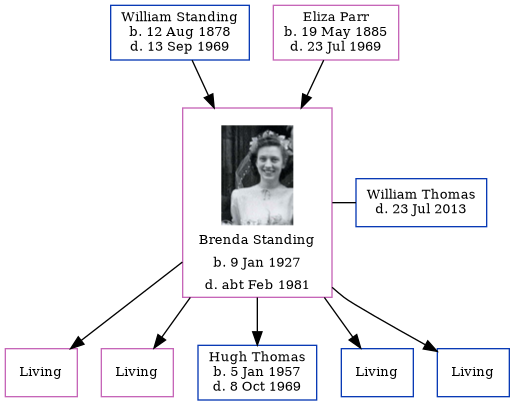

Brenda Margaret Thomas (née Standing) 1927 - c1981
[ Home ] | [ Calendar ] | [ Surnames Index ] | [ Errors ] | [ Family History ]The child of William Standing (a laundry man) and Eliza Parr, Brenda Standing, the fourth cousin once-removed on the father's side of Nigel Horne, was born in Romford, London, England on 9 Jan 19271,2,3 and married William Thomas (with whom she had 5 children: Susan C, June A, Hugh William, Steven M and Dominic P, along with 4 surviving children) in Ilford, London, England around Aug 19514. In 1963, she was living at 25 Strafford Avenue in Ilford5.
She died c. Feb 1981 in Romford1,3.
Parents
- William Ernest was born on 12 Aug 1878
- Eliza Mary was born on 19 May 1885
Children
- Hugh William was born on 5 Jan 1957
Citations
- England & Wales deaths 1837-2007 - Findmypast
- England & Wales, Birth Index: 1916-2005 Online publication - Provo, UT, USA: The Generations Network, Inc., 2008.Original data - General Register Office. England and Wales Civil Registration Indexes. London, England: General Register Office. © Crown copyright. Published by permission of the Cont
- England & Wales, Death Index: 1984-2005 Online publication - Provo, UT, USA: The Generations Network, Inc., 2007.Original data - General Register Office. England and Wales Civil Registration Indexes. London, England: General Register Office. © Crown copyright. Published by permission of the Cont
- England & Wales, Marriage Index: 1916-2005 Online publication - Provo, UT, USA: The Generations Network, Inc., 2009.Original data - General Register Office. England and Wales Civil Registration Indexes. London, England: General Register Office. © Crown copyright. Published by permission of the Cont
- London, England, Electoral Registers, 1832-1965 Ancestry.com Operations, Inc.
Media
Brenda Standing
England & Wales births 1837-2006 Transcription - BMD-B-1927-1-AZ-001167-015
England & Wales marriages 1837-2008 Transcription - BMD-M-1951-3-PZ-000313-074
England & Wales deaths 1837-2007 Transcription - BMD-D-1981-1-AZ-001187-099
Family Tree
Map
Generated by ged2site. Last updated on Jul 3, 2024
Known Issues
Listed in the residence for 1963, but spouse William Thomas is not
1939 UK register information missing